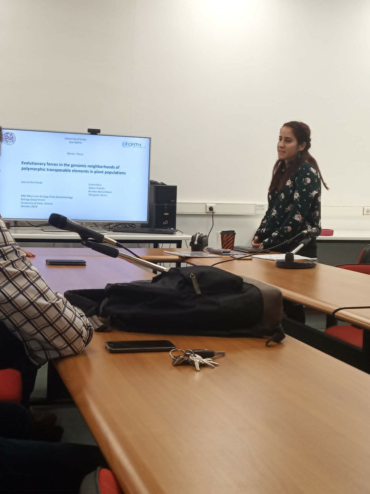
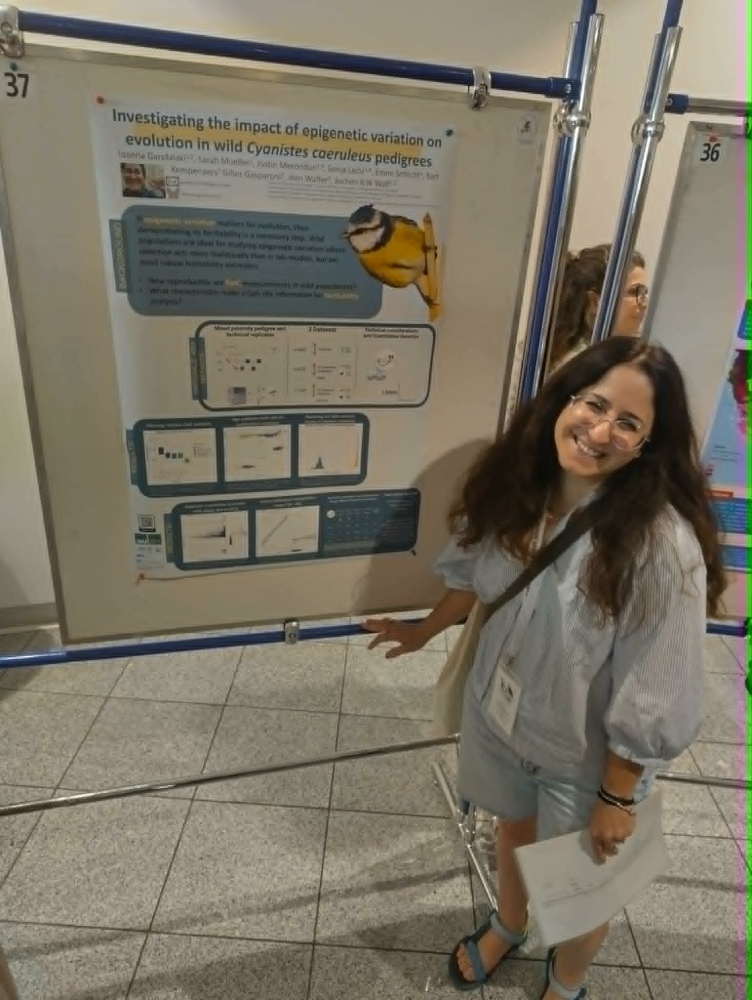
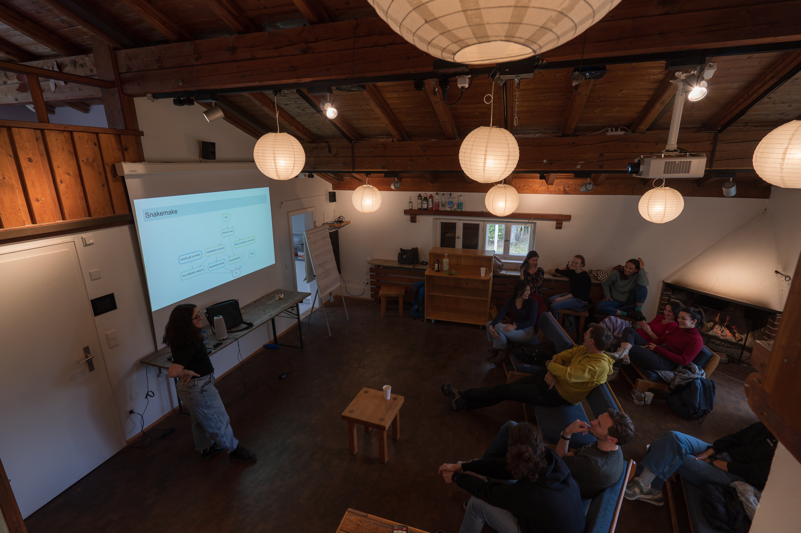
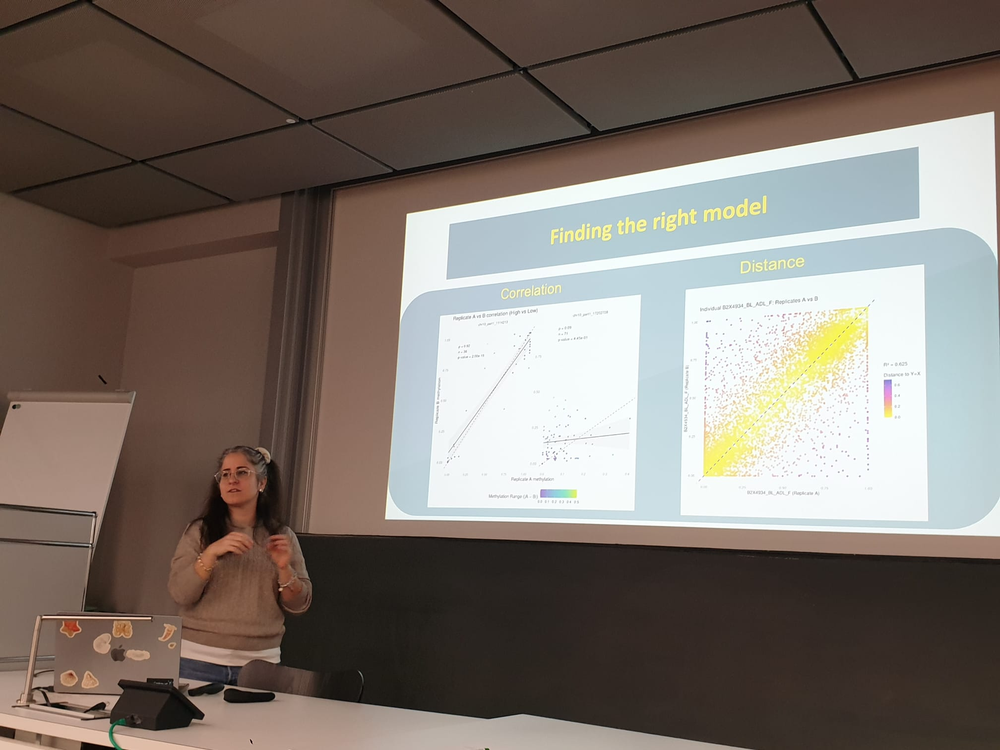
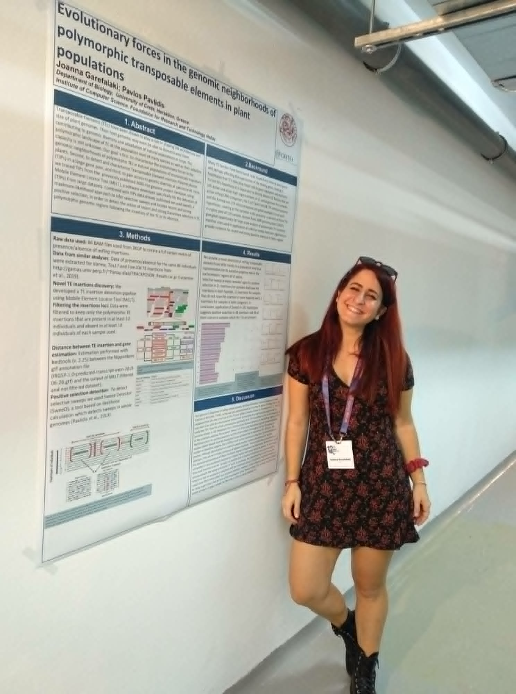
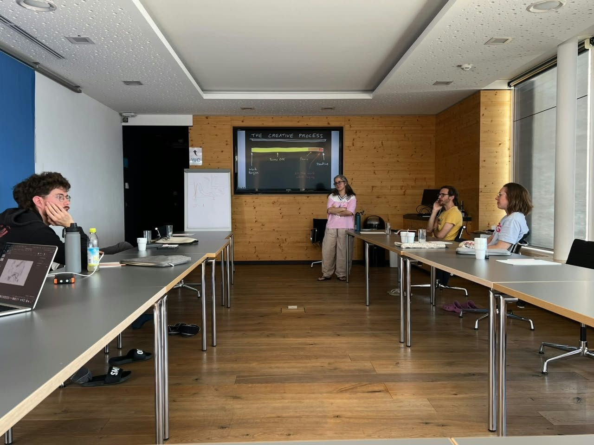
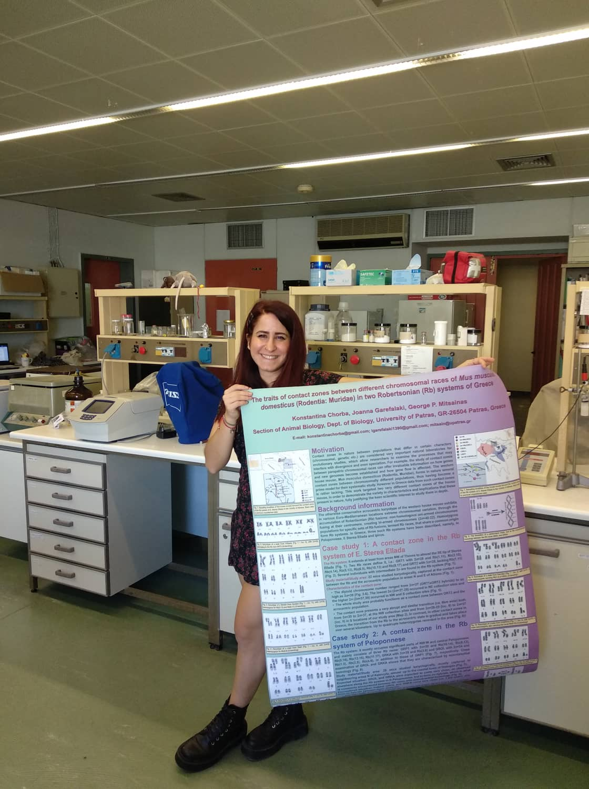
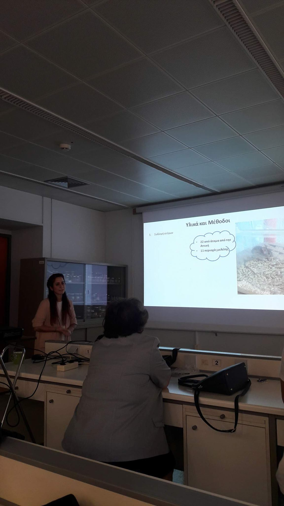

Presenting my Research
A visual record of presenting my research across different stages of my training, from undergraduate and MSc work to my PhD. These photographs include posters, thesis presentations, seminars, workshops and conference talks in genetics, population genomics, epigenetics and computational biology.







